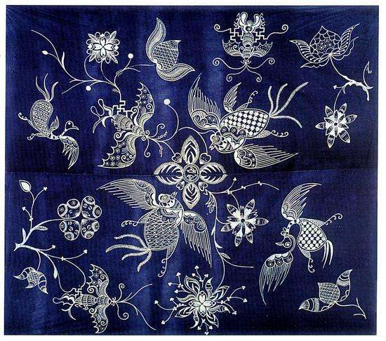
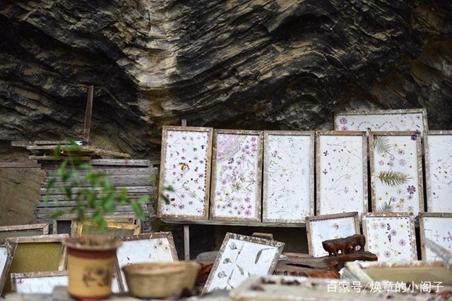

丹寨苗族蜡染的制作者们喜欢以自然纹为主的大花，自然纹以自然界中的花鸟鱼虫做素材，随心所欲地创作成别致的图案，造型生动，活泼流畅，富于夸张性。其中鸟的变化最为丰富，想象异常大胆，简练传神，乡土气浓，富有童话般的梦幻色彩。
蜡染

贵州石桥造出来的这种纸叫做白皮纸，迄今仍旧沿用最古老的造纸之术，专门提供给国家古籍、文物修复之用。听说，这里的纸真的能做到“寿纸千年”，一张石桥纸，保存得当，一千五百年也不会腐烂，也就是说这个技术再流传一千年，最早的那纸还没烂也未可知。